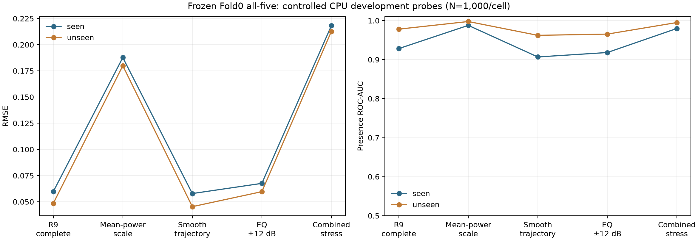

R10 로컬 검증 간극 진단: 실행 결과
GPU 본학습을 재개하지 않고 Mac CPU에서 자문안의 저장 예측 분해, 시간 셔플, 스타터 변환 대조, 배경×생성기 교차 평가, ambient 대조, 자연변동 배경 평가, 참조 분리 LightGBM 학습을 실행했다. 기존 R9 원천·체크포인트·앙상블 정책·제출 CSV는 변경하지 않았다.
현재 결론: 추가 세기와 참조 모양을 바꾸면 에너지 비율 추정 오차가 커진다. 그러나 결측·사이트·참조 공유 중 하나만으로 공식 AUC0.555 붕괴를 재현하지 못했다. 현재 좋은 로컬 수치를 공식 점수의 대용으로 삼아 GPU 학습을 확대할 근거는 아직 없다.
1. 공식 제출과 기존 로컬 지표
| 평가 대상 | 자료 | RMSE | AUC(score) | Public Score |
|---|
| R9 Fold0 all5 | ensemble_fit500 | 0.049384 | 0.972933 | — |
| R9 Fold0 all5 | ensemble_gate500 | 0.038135 | 0.944843 | — |
| R9 Fold0 all5 | 사용자 제공 공식 Public 결과 | 0.217535806 | 0.555066666 | 0.782464193 |
| R9 LightGBM 5fold 평균 | 사용자 제공 공식 Public 결과 | 0.231871324 | 0.548088888 | 0.768128675 |
| 이전 R5 CNN | INNER3000 | 0.090808 | 0.996721 | — |
| 이전 R5 CNN | 사용자 제공 공식 Public 결과 | 0.348008679 | 0.539533333 | 0.651991320 |
| 공식 Benchmark | 사용자가 제공한 점수 | 0.246132175 | 미확인 | 0.753867825 |
공식 수치는 사용자 스크린샷을 기록한 것이며 이 진단에서 새 제출·외부 전송은 하지 않았다. Benchmark의 실제 예측이 상수0인지0.1인지는 확인되지 않았다. 따라서 숨은 정답 모멘트나 목표 분포를 점수에서 역산하지 않았다. LightGBM5fold와 all5단일fold는 fold 범위도 달라 순수한 모델 추가 효과로 비교할 수 없다.
현재 all5는 Wide CNN, TFGrid–FDY–Conformer 변형, FDY-CRNN 변형, iTransformer 변형에 각각0.1, Physics LightGBM에0.6을 준 동결 조합이다. 신경망은 Fold0 best-window만 사용했고 5fold OOF 완료 결과가 아니다. selection은 체크포인트 선택, fit은 가중치 선택에 사용했던 자료이며 gate도 이미 확인한 development 자료다.
2. 결측 유발 영점 및 score 구성 분해
같은 추가 요청도 참조가 결측 분에만 들어가면 관측된 추가 에너지는0이다. 이때 물리적 정답0은 올바르지만, 관측량과 라벨 사이의 쉬운 단서가 생길 수 있다.
| 역할 | N | 명시적 무추가 | 결측으로 관측 추가0 | 관측분수 단독 AUC | Nobs15 all5 RMSE / AUC |
|---|
| selection | 1000 | 200 | 126 | 0.689777 | 0.054138 / 0.942020 |
| ensemble_fit | 500 | 100 | 100 | 0.764417 | 0.043237 / 0.974434 |
| ensemble_gate | 500 | 100 | 41 | 0.630238 | 0.031210 / 0.908975 |
관측량 단독과 라벨의 연관은 확인됐다. 하지만 Nobs15에서도 AUC가 높아 이것만으로 전체 성공·실패를 설명할 수 없다. Nobs5는 세 역할에서 모두 St Francis 배경이므로 관측량 효과와 사이트 효과를 이 표만으로 분리하지 못한다.
| 역할 | 정답(0,.03] vs 명시0 score / share AUC | 정답(.03,.08] vs 명시0 score / share AUC | HF bump 단독 AUC |
|---|
| selection | 0.874909 / 0.688273 | 0.961107 / 0.894122 | 0.863392 |
| fit | 0.924000 / 0.752667 | 0.953623 / 0.893478 | 0.924650 |
| gate | 0.846619 / 0.692302 | 0.967703 / 0.978378 | 0.865367 |
score는 share와 별개다. NN은0.5×share+0.5×마스크 시간 대비값, tree는0.5×share+0.5×분류기 확률이다. 대수 복원값은 저장된 직접 계산과 NN최대1.79e−7/tree5.97e−8 이내로 맞았다. score를 share만으로 바꾸는 정책 변경은 하지 않았다. 작은 양성의 share순위는 약하지만, 전체 회귀 SSE의58~69%는 y>.2 예제에서 발생했다. 작은 양성 AUC와 큰 비율 RMSE 문제를 구분해야 한다.
weak-background22참조에서 생성된 요청 예제의 전체 SSE 비중은3.01%/6.22%/1.31%다. 이 소수 예제만으로 전체 격차를 설명할 근거는 없었다. 원래 클래스가 background여도 외부 녹음을 더한 총에너지 정답을0으로 바꾸지 않았다.
조건부 지표·SSE·그룹 bootstrap 전체
3. 공식 오디오 변환 수식 검산
스타터 helper와 기존 변환을23개 합성 WAV와 실제 VTUAD120초로 대조했다. 실제 WAV 최대 상대 오차는1.88e-07, dB 오차는8.18e-07였다. 재계산한2초 파워와 기존 캐시는 bitwise동일했다.
두 구현 모두 Hann PSD를 대역 적분한 뒤30개2초 구간을 선형 평균한다. df 누락·PSD 평균/적분 혼동·로그 평균 순서 오류처럼 큰 배율 차이는 발견되지 않았다. 부동소수 정밀도, Nyquist 미지원 대역·무음·짧은 음원의 QC 정책 차이는 보고서에 남겼다. 이 검산은 SA 장비 보정이나 비공개 Test 생성기까지 일치한다는 뜻은 아니다.
helper·주파수 경계·실제 WAV 검산
4. 시간 순서 셔플
selection1000에서 관측된 분의25대역 행을 함께 섞었다. 결측 위치, 대역별 분포, 총에너지, 정답을 보존하고 상대 입력을 다시 계산했다. 사전 고정3seed를 사용했다.
| 동결 모델 | 원본 CPU RMSE | 셔플3seed 평균 RMSE |
|---|
| Wide CNN | 0.090372 | 0.100601 |
| TFGrid | 0.079414 | 0.089101 |
| FDY | 0.081086 | 0.115412 |
| iTransformer | 0.096515 | 0.112648 |
| LightGBM | 0.057347 | 0.065852 |
| all5 | 0.061953 | 0.072781 |
모든 모델의 모든 seed에서 RMSE가 악화됐다. all5 AUC는0.955967→0.952739로 거의 유지돼 회귀와 순위 반응이 달랐다. 따라서 “시간 순서를 전혀 사용하지 않는다”는 포괄적 주장은 지지되지 않는다. 다만 셔플은 차분/동조 특징도 바꾸고 비현실적 점프를 만들므로, 이 변화가 곧 선박 궤적 이해의 증명은 아니다.
저장 GPU BF16 대 CPU FP32의 RMSE 차이는 최대5.22e−5였다. 개별 값 차이는 있지만 이번 로컬 대 Public RMSE 약0.18 차이와 같은 규모는 아니다. GPU/CPU 라이브러리·커널도 달라 순수 BF16 효과만의 실험으로 부르지 않았다.
3seed·정밀도·물리량 불변 검증
5. 배경 × 생성 연산자 교차 평가
생성기 하나의 묶음만 비교하면 어느 변화가 원인인지 알 수 없어 기존/스케일만/궤적만/EQ만/결합의5종을 두 배경에서 시험했다. 각 셀1000건, 모두 QC후15분 완전 관측·명시0정확20%·동일참조/SNR/난수 스케줄이다. 지원영역 재추첨을 한쪽에만 적용하는 교란을 피했다.
seen은 Fold0 selection 원천 풀, unseen은 R9 TRAIN에 없는 domain_holdout이다. TRAIN 배경창 중복은 둘 다0이며 unseen만 recorder문자열/sensor component도 중복0이다. unseen표본은 Saldhana935/Fish Hoek35/Sea Point30으로 불균형하다. seen중124개 원배경은 기존 fixed selection에도 있었으므로 새로운 독립 배경 홀드아웃으로 과장하지 않는다.
| 연산자 | Seen RMSE / AUC | Unseen RMSE / AUC | 정답 RMS(Seen) |
|---|
| 기존R9 | 0.059704 / 0.928162 | 0.048462 / 0.978000 | 0.192203 |
| 관측 평균 전력 스케일 | 0.187706 / 0.987669 | 0.179882 / 0.997550 | 0.515551 |
| 완만한 궤적만 | 0.057842 / 0.906750 | 0.045322 / 0.962131 | 0.153509 |
| EQ±12만 | 0.067555 / 0.918106 | 0.059646 / 0.965300 | 0.192317 |
| 스케일+궤적+EQ | 0.218129 / 0.979706 | 0.212688 / 0.994938 | 0.515551 |

이 조건에서는 새 배경만으로 붕괴하지 않았다. 스케일 변경은 정답 RMS도0.192→0.516으로 바꾸므로 RMSE 악화를 단순한 생성기 암기로 확정할 수 없다. AUC는 오히려 높게 유지돼 Public AUC0.555 붕괴까지 재현하지 못했다. EQ±12는 진단 스트레스이며 실제 학습 레시피±6을 확대하지 않았다.
타깃 크기 교란을 제거한 후속 실험
첫 교차 결과를 본 뒤 사전 계획을 새로 고정해, 각 창의 기존 물리 정답 y를 그대로 유지하면서 결합 궤적·EQ만 바꾸고α를 다시 풀었다. 이는 후속 development실험이며 blind최종평가가 아니다. 스케일α만 바꾸고 y를 동일하게 고정하면 같은R에서 같은 혼합이 되므로 그 중복 실험은 하지 않았다.
| 배경 | 기존 RMSE / AUC | 동일 y·결합 모양 변경 RMSE / AUC |
|---|
| seen | 0.059704 / 0.928162 | 0.072373 / 0.914013 |
| unseen | 0.048462 / 0.978000 | 0.065634 / 0.962950 |
정답을 같게 유지해도 오차가 증가해 참조 모양 변화의 민감도는 남았다. 그러나 증가폭은 공식 격차보다 작고 AUC도0.91이상이다. 모든 민감도를 장비 암기라고 부르거나 Test에서도 같을 것으로 보장하지 않는다.
전 모델·사이트별 교차 결과와 검산 · 동일 타깃 후속 원자료
6. 참조 hull/day 분리 후 CPU LightGBM 재학습
원509클립은178hull/33일의 연결 그래프1개다. 단순 bridge쌍117개는 leaf hull에 연결된 쌍이어서 소수 클립을 빼250/250을 만들 수 있다는 전제를 확인하지 못했다. 사전 고정16개 메타데이터 분할 중 가장 많이 유지한 후보는408개(A211/B197), 제외101개였다. 이는 탐색 후보 안의 최선이며 전역 최적 분리의 불가능성 증명은 아니다.
이 분할을 성능 확인 전에 고정했다. A만 주입한 TRAIN16000건과 early-stop A1000건으로 원3827특징 Physics LightGBM을 새로 학습했다. 저장·동결 후 서로 다른 비교용 배경1000개에 A와 B를 각각 주입했다. TRAIN과 heldout배경은 group분리·900초support+24hpurge, 참조 A/B는 hull/day/UTC/bytes교차중복0을 검증했다.
| 비교 | RMSE | AUC score |
|---|
| A | 0.061923 | 0.923206 |
| B | 0.069529 | 0.911800 |
미관측 참조에서 RMSE가약12.3% 증가했지만 두 배 붕괴는 없었다. 기존 참조 공유가 무해하다는 결론도 아니다. 이 결과는16k tree1개의 제한된실험이며 NN4종이나 새로운 제공자/장비에는 직접 일반화할 수 없다. A/B길이·약한 클래스 구성도 다르다. early-stop과비교는 배경창은다르지만 selection내group을공유해 최종 blind검증으로 부르지 않는다. 회귀best1153/classifier85, 전체CPU71.9초였다.
참조 분할 실현 가능성 · 재학습·A/B 검산
7. Ambient 대조와 자연변동 배경
Ambient 대조500쌍은 같은배경·1~3분support·EQ·정답y를공유하고 참조종류만바꿨다. 독립원천500개씩이아니라 선박참조487개와ambient16개를순환사용했고 배경500개는서로달랐다. all5 RMSE는ship0.075954/ambient0.099583으로차이가있었다. 두음원에같은y를예측하는것은whole-added-energy회귀에맞다. 자문안의 “동일y에서같게예측하면장비암기” 판정은채택하지않았다. 모두양성이므로이패널에서AUC는정의되지않는다.
자연변동 배경은 LF(31.6~501.2Hz) 시간표준편차가 selection원천완전관측subset의q90=5.6118dB를초과하는499건과q50미만대조499건을비교했다. 두집단의windowID는서로및양성452건과중복0이다. 알려진정답은인위적추가A=0이며자연선박부재의실제정답이아니다.
| 모델 | 변동큰 배경 score≥.5 비율 | 대조 배경 score≥.5 비율 |
|---|
| Wide CNN | 16.23% | 10.62% |
| TFGrid | 6.61% | 15.03% |
| FDY | 14.03% | 15.23% |
| iTransformer | 56.71% | 8.02% |
| LightGBM | 1.00% | 1.80% |
| 동결all5 | 1.80% | 3.61% |
iTransformer의자연변동민감도는뚜렷하지만all5와모든모델이같이오탐하는것은아니었다. 배경집단의사이트구성도달라LF변동만의인과효과로확정하지않는다. 이결과로앙상블가중치를바꾸지않았다.
자연변동 평가·독립 검산
8. 지금 확인된 것과 다음 해결 과제
| 가설/항목 | 이번 측정으로 말할 수 있는 범위 |
|---|
| 수식·CSV전달의큰오류 | 기존CSV재현과이번helper대조에서큰오류미발견. 모든물리/hidden정의까지동일하다는보장은아님. |
| 결측량만외움 | 라벨과연관은있지만완전관측에서도높은AUC가남아단독설명불충분. |
| 시간순서무시 | 전모델3seed에서RMSE악화. 시간변화사용은있으나선박의미이해증거는아님. |
| 새사이트만문제 | 이3사이트/완전관측/같은VTUAD생성기표본에서는붕괴재현안됨. |
| 509참조공유만문제 | 새tree의A→B는약12%악화. 모든모델·새장비·비공개참조에는미확정. |
| 생성규칙전이 | 추가세기/모양변경에서회귀민감도확인. 타깃매칭후에도잔여오차증가. |
| 자연과도음혼동 | iTransformer의특정slice취약점확인. 동결all5전체실패를설명하진못함. |
| 공식AUC붕괴 | 이번검사로아직재현하지못함. 로컬통과를LB일치의증명으로사용하지않음. |
우선순위는 좋은 로컬 수치를 더 낮추는 것보다 공식 실패와 같은 패턴을 재현하는 검증 조건을 확보하는 것이다. 다음 후보는 참조의 주변음·자연 고주파 변동·관측 요약/추가 성분 정의의 교차 검증이다. 이미 틀린 것으로 단정하고 데이터나 라벨을 바꾸지 않는다. 전체 추가 에너지 정답식, 원천 분리·24시간purge, 제출물과 모델 추적 해시는 유지한다. GPU100epoch 본학습·새 제출·후처리 가중치 최적화는 이번 진단에서 하지 않았다.
9. 산출물과 재현 범위
- 모든 실험은 새
ops/r10_*.py와 reports/r10_diagnostics/에 보존했다. 원본 R9 파일은 덮어쓰지 않았다.
- 원천·모델·정책 해시를 실행 전후 검증하고 숫자 오라클을 별도로 재계산했다. 원천 연결 메타데이터와 실제 장비 동일성을 혼동하지 않았다.
- 새 원천 bank는 만들지 않았다. 진단 합성 패널은 원래 bank를 읽어 새 디렉터리에 저장했다.
- 진단 개발 중 metadata 출력/merge 오류와 실험용warp의 support소실 오류가 있었다. 실패 partial은 FAILED기록과 함께 보존하고 새 디렉터리에서 재실행했다. 원모델학습 오류로 보고하지 않았다.
- 최초factorial OUTPUT_MANIFEST는 초기보고서버전영수증이다. 독립리뷰후 paired support1~3분·seen/unseen중복범위를정정했고 REVIEW_CORRECTIONS에before/after해시를보존했다. 최신자료목록은R10_DIAGNOSTICS_MANIFEST.json이다.
재실행 기준 디렉터리는 /Users/hongtaeyang/Documents/ChatGPT/대회/underwater_vessel_noise.nosync다. 바탕화면에는 새 진단 산출물·코드도 동일한 상대 구조로 복사했다. 원래의 동결 모델 경로 맵과 원천 은행을 참조하므로, 바탕화면 복사본만 독립 실행하려면 경로 맵·원천 바인딩을 별도 검증해야 한다. 보고서와 이미지는 바탕화면에서 바로 열 수 있다.
기존 자문 브리프 · 전 모델 숫자 CSV